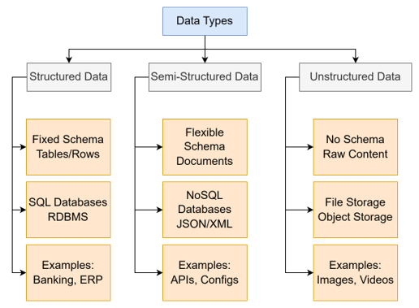
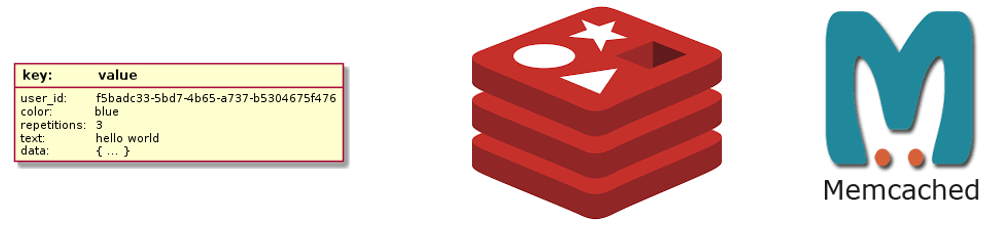
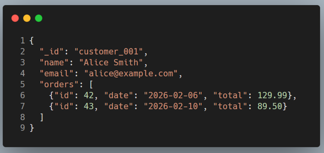
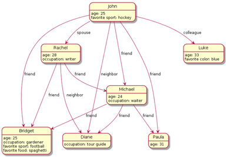
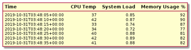

Chapter1Introduction to Database Systems
1The exponential growth of digital data
Global data creation expands rapidly from 15.5 zettabytes in 2015 to a forecast 221 zettabytes in 2026.
One zettabyte (ZB) expressed in bytes and bits

Key Growth Highlights:
2015 Baseline: 15.5 zettabytes of data created or replicated worldwide.
2026 Forecast: 221 zettabytes of total global data volume.
Daily Volume: Reaches 402.74 million terabytes (or about 29 terabytes per second).
Annual Pace: Data volume expands by roughly 22% year-over-year.
Main Drivers of Expansion:
Unstructured Data: Makes up 80% to 90% of all data, growing three times faster than structured data.
Artificial Intelligence: AI model training, machine learning, and interactive tools generate massive volumes of continuous information.
Connected Devices: The expansion of the Internet of Things (IoT), edge computing, and high-resolution media like virtual reality and autonomous vehicle sensors drive high daily loads.
2Fundamental Concepts
2.1What is Data?
Data
Data are raw facts, values, observations, or symbols collected from the real world. By themselves, they may be incomplete or hard to interpret.
Note
The data in DBMS can be broadly classified into two types; one is the collection of information needed by the organization and the other is “metadata” which is the information about the database.
Examples of Data:
Numbers: 25, 100
Text: "John", "New York"
Images: A photograph
Measurements: 30°C, 5.5 cm
2.2What is Information?
Information
Information is data that has been processed, organized, and placed in context so that it becomes meaningful and useful.
Note
Data becomes information when it is organized and interpreted.
Data answers the question “What was observed?” while information answers the question “What does it mean?”
Examples of Information:
The average temperature for the week was 22 degrees Celsius.
Ahmed, Sara, and Ali attended the meeting.
3Data Classification in Database Systems
Database management systems (DBMS) categorize data across multiple structural, technical, and governance layers to optimize physical storage, query performance, and security.
3.1Classification by Structure & Schema Format
Structured, semi-structured, and unstructured data are classifications based on the degree of organization in the data. They describe how data is formatted and whether it conforms to a predefined model.


3.1.1Structured Data
Structured data has a predefined schema with fixed data types, organized into rows and columns (tables). Each field has a specific type and constraint, making it highly organized and easily searchable.
Key Characteristics:
Predefined Schema(Schema-on-Write): Follows a fixed model (like a relational database, SQL table, or Excel spreadsheet) where every record shares the same fields and data types. any data is entered, with strict data types enforced (e.g.,
INT,VARCHAR).Tabular Format: Data is organized neatly in rows (records) and columns (attributes), like a spreadsheet.
Machine Readable: Easily parsed by algorithms, software applications, and search engines.
High Efficiency: Lends itself well to fast searching, sorting, aggregation, and mathematical calculations.
Common Examples:
Database Tables: Customer names, phone numbers, account balances, and transaction timestamps.
Financial & Business Records: Spreadsheets tracking inventory counts, payroll, and sales figures.
| EmployeeID | FirstName | LastName | Department | HireDate | Salary |
|---|---|---|---|---|---|
| 1001 | Hussein | Younis | Engineering | 2022-03-15 | 95000 |
| 1002 | Ahmed | Yassen | Marketing | 2021-08-01 | 78000 |
| 1003 | Ammar | saif | Sales | 2023-01-10 | 82000 |
3.1.2Semi-Structured Data
Semi-structured data is information that does not conform to a rigid relational database schema, but still contains internal markers, tags, or organizational structures to separate data elements.
Unlike fully structured data (Schema-on-Write), it allows for flexibility because fields can be added, omitted, or nested on the fly without breaking the system. It bridges the gap between structured tables and completely unstructured text.
Key Characteristics:
Flexible Schema: Records do not need to have the exact same fields. One record might have five attributes, while the next has ten.
Self-Describing: The data contains both the description of the data (metadata) and the data itself within the same file (e.g., tags or keys like
"first_name": "hussein").Hierarchical & Nested: Data can easily contain child elements, arrays, or sub-objects nested within a single record.
Schema-on-Read: The structure is interpreted when the data is read (queried), not when it is stored.
No Fixed Tables: Data is stored in documents or objects rather than rigid rows.
Common Formats & Examples:
JSON (JavaScript Object Notation): The most popular format for web APIs and modern NoSQL databases.
XML (eXtensible Markup Language): A tag-based format widely used in legacy systems, enterprise configurations, and web services.
NoSQL Databases: Platforms like MongoDB or DynamoDB that store data as flexible, semi-structured documents.
Emails: The body text is unstructured, but the email metadata (To, From, Subject, Date) provides semi-structured organization.
[
{
"userId": 201,
"name": "Ahmed Mansour",
"location": "Nablus",
"contact": {
"email": "ahmed@example.com",
"phone": "+970-59-XXXXXXX"
},
"active": true
},
{
"userId": 202,
"name": "Fatima Nazzal",
"location": "Ramallah",
"skills": ["Data Analysis", "Python", "API Integration"]
}
]
<catalog>
<product id="P-501">
<name>Wireless Mouse</name>
<price currency="USD">29.99</price>
<category>Electronics</category>
</product>
<product id="P-502">
<name>Smart Thermostat</name>
<price currency="USD">149.00</price>
<specifications>
<connectivity>Wi-Fi</connectivity>
<compatibleWith>Alexa, Google Assistant</compatibleWith>
</specifications>
</product>
</catalog>
3.1.3Unstructured Data
Unlike structured database tables or semi-structured JSON files, it cannot be neatly organized into rows and columns without heavy processing. It makes up the vast majority of the data generated in the world today—estimated at around 80% to 90% of all enterprise data.
Key Characteristics:
No Inherent Structure: There are no fixed fields, keys, or tags to identify data elements out of the box.
Heavy Text and Media Focus: It consists primarily of raw human language, audio, or visual files.
Requires AI/ML to Parse: To extract meaning, systems must use technologies like Natural Language Processing (NLP), computer vision, or speech-to-text.
Examples Using Local and Transliterated Contexts:
Text Files: A digital copy of a book detailing the history of Nablus, or a text file containing the poetry of Mahmoud Darwish.
Audio Files: A voice note sent by Ahmed over WhatsApp discussing a business proposal.
Video Footage: Traffic or security camera footage overlooking the city center of Ramallah or Hebron.
Images: Satellite photographs of agricultural fields near Jenin, or a JPEG of a scanned hand-written invoice.
Communications: The raw text bodies of emails, chat messages, or social media posts.
4How Data Was Saved: A Brief History
Before Edgar F. Codd published his landmark relational model paper in 1970 and before the relational database management systems (RDBMS) emerged, the database landscape was dominated by older generations of database models—most notably the hierarchical database model and the network database model.
4.1Phase 1: The Filing Cabinet Era (Pre-Computer Era)
Before computers, Data was stored physically in paper folders, filing cabinets, and structured paper forms. Retrieval and organization relied entirely on manual sorting and clerical oversight. The terminology of this era persists in modern computer systems: physical folders became files, form entries became records, and blank spaces became fields.

Problems and Limitations:
Extreme physical vulnerability (susceptible to fire, misplacement, and physical degradation).
Highly constrained scalability, requiring linear manual searching through massive physical archives.
Complete absence of cross-referencing mechanisms or concurrent multi-user modification safeguards.
4.2Phase 2: The Flat-File Era (1950s–1960s)
Emerged with the advent of commercial electronic data processing in the 1950s and dominated through the 1960s. Organizations digitized filing cabinets by storing records as simple sequential text files (flat files) on magnetic tape or early hard disks, processed via custom procedural programs written in COBOL or assembly.

Notepad Scenario
Imagine building a simple student-grade system for an academic department using three independent text files:
📄 students.txt
001, Ahmed Khalidi, Computer_Eng
002, Sara Hasan, Computer_Eng
003, Omar Zayed, Information_Sys
📄 grades.txt
001, Database, 92
001, Networks, 85
002, Database, 78
003, Database, 90
📄 departments.txt
Computer_Eng, Dr_Mansour, Building_A
Information_Sys, Dr_Younis, Building_BWhile clean and simple at first glance, this flat-file approach collapses under scale due to six critical structural problems:
Linear Search Overhead (): Finding records requires scanning files line by line from top to bottom, becoming agonizingly slow as datasets grow into millions of rows.
Data Inconsistency: Redundant data leads to conflicting updates when a change in one file is not propagated to duplicated fields elsewhere.
Lost Updates from Concurrency: Simultaneous edits by multiple users cause the last save to silently overwrite and destroy earlier work.
Complex Manual Joins: Cross-referencing related data across multiple files requires writing dozens of lines of tedious procedural parsing code.
Zero Type Safety or Validation: Plain text files allow malformed entries, typos, and empty sentinels that crash analytics scripts.
File Corruption on Crashes: Power outages mid-write leave files permanently truncated and inconsistent without a transaction recovery log.
4.3Phase 3: Hierarchical and Network Database Models
To overcome flat-file limitations in the late 1960s and early 1970s, early database models introduced structured record linkage before the relational model took over:
The Hierarchical Model: Organized data in a strict tree-like parent-child structure (such as IBM's Information Management System [IMS] developed for the Apollo program), where each child node could have only one parent.
The Network Model: Standardized by the Conference on Data Systems Languages (CODASYL), allowing child records to connect to multiple parent nodes using graph-like pointer structures to support many-to-many relationships.
Limitations: Both models required programmers to navigate physical pointers manually and lacked data independence, meaning changing the physical schema required rewriting application traversal logic.

4.4Phase 4: The Relational Revolution and SQL
In 1970, E.F. Codd at IBM proposed the relational model.
Core Mechanism: Data is stored mathematically as tables (relations) connected by primary and foreign keys, completely decoupling the logical structure of data from its physical storage.
The SQL Evolution: To make the relational model practical, developers created Structured Query Language (SQL). SQL allowed users to specify what data they wanted declaratively while the DBMS handled how to fetch and optimize the query.
Impact: Commercial relational database management systems (RDBMS) solved the core flaws of flat files and early hierarchical models, establishing the dominant paradigm for enterprise software.
5What Is a Database?
Database
A database is an organized collection of interrelated data that models some aspect of the real world.
Database Management System (DBMS)
Database Management System (DBMS) is a specialized software architecture that serves as an abstraction layer between physical data storage and user applications. A DBMS provides high-level declarative interfaces for data definition, query optimization, concurrency control, transaction processing, data integrity enforcement, and crash recovery.
Note
The combination of a database and its DBMS is called a database system. In everyday speech, people often say “database” when they mean the entire system.
Common Misconception
Question: “Is a database software?”
Answer: No—a database is the data itself. The DBMS is the software that manages the database.
5.1Data Abstraction
The major purpose of a database system is to provide users with an abstract view of the system. The system hides certain details of how data is stored and maintained, ensuring that internal complexity is hidden from database users.
Unlike raw file systems where developers must manage physical storage paths, byte offsets, and access indices, a Database Management System (DBMS) shields users from these low-level implementation details.
To achieve this, database systems typically organize data abstraction into three conceptual levels (known as the Three-Schema Architecture):
Physical Level: The lowest level of abstraction, describing how the data is actually stored on disk (e.g., file allocations, B-tree indexing blocks, compression algorithms, and byte pointers).
Logical Level: The middle level, describing what data is stored in the database and the relationships among them (e.g., tables, columns, constraints, and data types) without concerning itself with physical storage locations.
View Level: The highest level of abstraction, consisting of tailored, restricted windows into the database designed for specific user groups (e.g., hiding sensitive salary or administrative columns from student or customer portals).
By maintaining strict separation across these layers, the DBMS ensures data independence—the ability to modify physical storage structures or indexing strategies without requiring any changes to application programs or logical table designs.

5.2Key properties of a database
Self-describing: The database stores a description of its own structure — called the catalog (or data dictionary) — alongside the data itself. Unlike a text file, the database knows what columns exist, what types they have, and what constraints apply.
Insulation between programs and data: Application programs do not need to know how data is physically stored. Changing storage details does not require rewriting application code (data abstraction).
Support for multiple views: Different users see different tailored views of the same underlying data. The payroll clerk sees salary columns; the student portal sees only name and grade.
Sharing and multiuser transaction processing: Multiple users and programs access data concurrently while the DBMS guarantees that their actions do not interfere with each other.
5.3Database Languages
How Do We Talk to the Database?
You don’t edit database files—you ask for what you need.
These questions are written in a special language called SQL
A Database Management System (DBMS) provides structured languages for every interaction. While traditional relational database systems rely heavily on standardized SQL (Structured Query Language), different database models—particularly NoSQL systems—utilize alternative approaches tailored to their specific architectures.
| Language | Abbreviation | Purpose & Detailed Scope | SQL Examples |
|---|---|---|---|
| Data Definition Language | DDL | Data definition: Create, modify, and remove definitions of the data's structure. These operations change properties that affect how the database accepts and stores data, which is more critical in rigid database architectures than in flexible ones. | CREATE TABLE, ALTER TABLE, DROP TABLE |
| Data Manipulation Language | DML | Update and Retrieval: Insert, modify, and delete data rows (changing the actual managed data), or retrieve stored data as-is, filtered, or transformed into a useful format using rich query mechanisms. | SELECT, INSERT, UPDATE, DELETE |
| Data Control Language | DCL | Administration & Security: Manage user access privileges, permissions, and security controls. | GRANT, REVOKE |
| Transaction Control Language | TCL | Transaction Management: Manage transaction boundaries, commit changes, or roll back uncommitted work to maintain atomicity. | COMMIT, ROLLBACK, SAVEPOINT |
5.3.1Interacting with NoSQL Databases
Unlike relational databases that rely on a universal declarative language like SQL, NoSQL databases use APIs and query languages specific to their data model.
Because NoSQL families (such as document stores, key-value stores, column-family stores, and graph databases) reject rigid tabular schemas in favor of flexible structures, they require specialized query mechanisms:
Document Stores (e.g., MongoDB): Utilize rich programmatic JSON/BSON-based query methods and driver APIs rather than standard relational
JOINstatements (e.g.,db.students.find({ major: "Computer Science" })).Key-Value Stores (e.g., Redis, DynamoDB): Rely on minimal programmatic APIs consisting of direct operational primitives like
GET(key),PUT(key, value), andDELETE(key).Graph Databases (e.g., Neo4j): Implement specialized graph traversal query languages (such as Cypher) designed specifically to navigate nodes and edges rather than relational rows and columns.
5.4The Database Is Just Files — The DBMS Is the Container
Both a simple file system and a database ultimately store your records as bytes in files on a disk. When you create a database in MySQL, it simply creates a folder on your drive, and when you create a table, it writes files like employee.ibd inside that folder.
However, the fundamental difference lies in what sits on top of those raw files:
In a file system: The files are "dead bytes." The operating system only gives you basic read and write system calls, leaving you to write custom code for searching, updating, concurrency, and security.
In a database: The Database Management System (DBMS) adds an intelligent runtime layer around those files.
By wrapping the files in this container, the DBMS provides the advanced mechanisms missing from raw files—such as a buffer pool for fast memory caching, transaction management with Write-Ahead Logs (WAL) for crash safety, locking and MVCC for concurrent users, and an automated query optimizer that replaces manual file-parsing code.
| Concern | What "Just Files" Give You | What the DBMS Gives You |
|---|---|---|
| OS Integration | Raw read/write system calls | Buffered, page-aligned I/O; direct I/O for Write-Ahead Logs; fsync for guaranteed durability |
| Memory / Cache | Nothing — every read hits disk storage | Buffer pool — hot data pages stay in RAM (thousands of times faster than disk access) |
| Concurrency | OS advisory file locks (all-or-nothing) | Row, page, and table locks, Multi-Version Concurrency Control (MVCC), isolation levels, and deadlock detection |
| User Management | OS file permissions only | Fine-grained CREATE USER, GRANT, and REVOKE controls at the database, table, column, or row level |
| Security | Dead bytes on disk readable by anyone with disk access | Authentication, encryption-at-rest, audit logs, and TLS for client connections |
| Crash Safety | A half-written, corrupted file after a power outage | Write-Ahead Log (WAL) + automated rollback/redo mechanisms providing ACID durability |
| Query Processing | Custom hand-written scan, join, and sort logic | SQL parser optimizer executor that selects the most efficient execution plan automatically |
| Self-Description | Manual documentation or memory | Data dictionary — the database describes its own structure |
| Networking | Local file access only | TCP network listeners, connection pooling, and standard client drivers (JDBC/ODBC) |
The Paradigm Shift: Manual Code vs. Declarative SQL
To understand why a Database Management System (DBMS) transforms data engineering, consider how a developer extracts specific records from a raw flat file versus how they query a relational database.
1. Manual File Parsing (The File System Approach)
When working directly with flat files, developers must write low-level procedural code to manage disk access, string manipulation, and filtering logic manually.
# You must manually write code to find data
for line in open("students.csv"):
parts = line.split(",")
if parts[2] == "Computer Science": # GPA column?
print(parts[0]) # Hope this is the name!Explanation: In this procedural approach, the programmer carries the entire execution burden. They must explicitly open the file, iterate through every single row, handle string splitting, and assume the column indices correspond to the expected schema. Any minor typo, misaligned delimiter, or missing column value causes runtime errors, incorrect filtering, or corrupted results.
2. Declarative Querying (The Relational Database Approach)
In contrast, a relational database allows users and applications to interact with data using a high-level, declarative language.
-- DBMS figures out the most efficient way to retrieve data
SELECT name FROM Students
WHERE major = 'Computer Science'
AND gpa >= 3.5
ORDER BY gpa DESC;Explanation: Here, the query is entirely declarative—the user specifies what data is needed rather than how to fetch it. The DBMS parses the statement, consults the system catalog, passes the query through an automated optimizer to choose the most efficient execution plan (such as utilizing a B+ tree index instead of a full table scan), manages memory caching via the buffer pool, and returns the accurate result safely.
5.5Database Users and Administrators
Database users interact with the system in various ways depending on their technical expertise and job requirements.
| Category & Role | Description | Core Focus / Responsibilities | Typical Tool |
|---|---|---|---|
| 1. Naive / Parametric Users | End users who interact with the system indirectly via pre-built applications. Totally unaware of DBMS internals. | Performing standard day-to-day transactions (e.g., checking grades, placing orders). | Web forms, mobile apps, customer portals |
| 2. Application Programmers | Software developers who build backend/frontend services that interface with the database. | Writing code that executes SQL queries via embedded commands, drivers, or ORMs. | Python, Java, PHP, IDEs |
| 3. Sophisticated Users | Power users familiar with the database who bypass standard interfaces. | Writing ad-hoc queries for deep data analysis, reporting, and research. | SQL clients, Jupyter Notebooks, BI tools |
| 4. Specialized Users | Domain experts who create custom database applications or analytical pipelines. | Developing unique, domain-specific tasks (e.g., spatial analysis, machine learning integration). | Custom scripts, specialized frameworks |
| 5. Database Designers (Data Modelers) | Professionals who bridge business requirements and technical database structure. | Requirements analysis, conceptual ER design, logical normalization, and physical layout. | ER modeling tools, data dictionaries |
| 6. Database Administrators (DBAs) | Operations experts who carry ultimate responsibility for the production environment. | Schema definition, storage optimization, security/authorization, maintenance, and backups. | Command-line interfaces, Admin Consoles |
| 7. Database Managers | High-level organizational leaders overseeing the entire data function. | Strategic planning, team supervision, budgeting, infrastructure procurement, and policy governance. | Project management tools, executive reports |
..png)
5.5.1Core Responsibilities of the Database Administrator (DBA)
The DBA bears ultimate operational responsibility for the health, availability, security, and integrity of the database production environment. Their core duties include:
Schema Definition: Establishing the foundational database structure using Data Definition Language (DDL).
Storage Structure Decisions: Configuring physical parameters, selecting optimal storage engines, and determining indexing strategies for query performance.
Authorization Management: Enforcing security policies by granting and revoking privileges across users and roles to protect sensitive assets.
Routine Maintenance: Overseeing automated backup schedules, monitoring resource utilization, and tuning slow-running queries.
Schema Evolution: Safely modifying database structures to accommodate changing business requirements with minimal disruption.
5.5.2Core Responsibilities of the Database Designer
The Database Designer (or Data Modeler) bridges business requirements and technical implementation by focusing on logical and physical data organization:
Requirements Analysis: Interviewing stakeholders, identifying entities, attributes, and relationships, and documenting business rules and constraints.
Conceptual Design: Constructing Entity-Relationship (ER) diagrams to map out high-level concepts, entity types, cardinalities, and participation constraints.
Logical Design: Translating the conceptual model into a relational schema (tables), applying normalization rules (1NF, 2NF, 3NF, BCNF) to reduce redundancy, and defining keys.
Physical Design: Selecting appropriate data types, building performance-tuned indexes, partitioning large datasets, and defining secure views.
Schema Evolution: Planning structural updates and data migrations while keeping documentation current.
5.5.3Core Responsibilities of the Database Manager
The Database Manager provides high-level organizational leadership, aligning database infrastructure with broader enterprise goals:
Strategic Planning: Formulating long-term data strategies, evaluating emerging technologies, and planning for organizational scalability.
Team Management: Directing DBAs and designers, prioritizing engineering tasks, and conducting performance evaluations.
Budget & Resource Allocation: Managing infrastructure budgets, procuring hardware and software licenses, and justifying technology investments.
Policy & Governance: Establishing organizational naming conventions, operational standards, and regulatory compliance protocols.
Stakeholder Communication: Reporting system statuses to executives and coordinating with cross-functional software teams.
5.5.4Core Responsibilities of the Database Users
Users interact with the system through distinct abstractions tailored to their technical expertise:
Application Programmers: Build backend and frontend software services that interface with the database via drivers or ORMs to deliver business logic to end-users.
Sophisticated Users (Power Users): Possess advanced database literacy, writing direct query-language statements for deep data exploration and reporting.
Naive Users (Casual / End Users): Interact indirectly through graphical user interfaces, web portals, or mobile apps without any direct exposure to database schemas or query languages.
Specialized Users: Build custom applications or analytical pipelines tailored to unique, domain-specific tasks (e.g., spatial analysis or machine learning integration).
6Database Classification and Paradigms
While E.F. Codd's relational model remains the foundation of enterprise data management, the modern technological landscape spans a rich ecosystem of specialized database families tailored to distinct structural, scale, and performance needs.
6.1Relational Databases
When Initiated & Used: 1970s (E.F. Codd's paper), commercially viable in the 1980s. The dominant database model for over 40 years.
Problem it Solved: It solved the rigidity and redundancy of previous models by using tables, relationships (keys), and a high-level, declarative query language (SQL).
Characteristics:
Data organized into tables (relations) with rows (tuples) and columns (attributes).
Uses primary and foreign keys to define relationships.
Relies on ACID (Atomicity, Consistency, Isolation, Durability) transactions for strict data integrity.
Advantage: High data integrity, flexible querying (JOINs), data independence, and a standardized language (SQL). Excellent for complex transactions.
Disadvantage: Can be difficult to scale horizontally (across many servers). The rigid schema can be a poor fit for unstructured or semi-structured data.
Example: PostgreSQL, MySQL, Oracle Database, Microsoft SQL Server.
6.2NoSQL Databases
Not only SQL
The acronym NoSQL does not stand for "No SQL" (meaning the complete absence of SQL or query languages). Instead, it officially stands for "Not Only SQL." This emphasizes that NoSQL databases complement relational databases rather than completely replace them, often combining alternative query mechanisms, specialized APIs, or even SQL-like layers alongside non-relational data models.
NoSQL ("Not only SQL") databases emerged in the late 2000s alongside the rise of big web applications (such as Google, Amazon, and Facebook) and cloud computing.
When Initiated & Used: Late 2000s. Emerged to address the demands of large-scale distributed web applications.
Problem it Solved: It addressed the need for horizontal scalability, handling massive volumes of unstructured and semi-structured data, and supporting flexible schemas where traditional relational models struggled.
Characteristics:
"Not Only SQL." A broad category of non-relational databases.
Schema-flexible or schema-less design.
Built for horizontal scaling and high availability across distributed clusters.
Often utilize BASE (Basically Available, Soft state, Eventual consistency) properties instead of strict ACID guarantees.
Advantages: High horizontal scalability, high performance for specific data models, ability to process massive volumes of diverse data, and developer-friendly flexibility for modern applications.
Disadvantages: Weaker consistency guarantees compared to traditional RDBMS, lack of a universal standardized query language, and limited support for complex multi-table transactions.
6.2.1Key-Value Databases
When Initiated & Used: Mid-to-late 2000s. Gained prominence with systems like Amazon's Dynamo.
Problem it Solved: It solved the need for extremely fast, simple, and scalable lookups for data that is accessed by a known identifier.
Characteristics:
A giant, distributed hash map. Data is stored as a collection of key-value pairs.
The value is opaque (blob) to the database; it doesn't know or care what's inside.
Advantages: Incredibly fast, simple, and highly scalable. Perfect for caching and session management.
Disadvantages: Limited querying capability. You can only query by the key. Not suitable for relationships or filtering based on the value's content.
Examples: Redis, Amazon DynamoDB (Core functionality), Memcached.

6.2.2Document Databases
When Initiated & Used: Mid-to-late 2000s, popularized alongside web-scale applications and agile development methodologies.
Problem it Solved: It solved the "impedance mismatch" between rigid relational tables and complex, hierarchical application objects (like nested JSON payloads) by storing data as self-describing documents.
Characteristics:
Data is stored as semi-structured documents (typically JSON, BSON, or XML) rather than fixed-schema rows and columns.
Documents can contain nested objects and arrays, keeping related data together without requiring expensive multi-table
JOINoperations.Schema-flexible or schema-less design, allowing different documents in the same collection to have different fields.
Advantages: Excellent alignment with modern programming object models, fast retrieval of complete hierarchical records, flexible schema evolution, and straightforward horizontal scaling (sharding).
Disadvantages: Complex multi-document transactions can be more challenging to manage than in traditional RDBMS, and ad-hoc aggregations across deeply nested structures require specialized query operators.
Examples: MongoDB, Couchbase, Amazon DocumentDB.

6.2.3Graph Databases
When Initiated & Used: Gained significant traction in the late 2000s and 2010s as highly connected datasets (social graphs, recommendation engines, fraud detection) overwhelmed traditional relational JOIN performance.
Problem it Solved: It solved the exponential performance degradation of multi-table
JOINoperations in relational databases when traversing deep, highly interconnected networks of relationships.Characteristics:
Data is modeled as a collection of nodes (entities), edges (relationships), and properties (attributes on both).
Relationships are treated as first-class citizens stored physically as direct pointers (index-free adjacency) rather than computed dynamically via keys at runtime.
Specialized declarative traversal languages (such as Cypher) designed specifically to query paths, networks, and patterns.
Advantages: Blazing-fast traversal of deep relationships regardless of dataset size, highly intuitive modeling for connected domains, and exceptional performance for recommendation systems and network analysis.
Disadvantages: Can be challenging to scale horizontally across distributed clusters for general-purpose transactional workloads, and requires a shift in thinking away from traditional tabular normalization.
Examples: Neo4j, Amazon Neptune, ArangoDB.

6.3Time-Series Databases
When Initiated & Used: Emerged prominently in the early-to-mid 2010s to address the explosion of IoT devices, cloud infrastructure monitoring, and high-frequency financial trading.
Problem it Solved: It solved the inability of traditional relational and standard NoSQL databases to efficiently ingest, compress, and query millions of high-velocity, append-only timestamped events without running out of disk space or slowing down historical range queries.
Characteristics:
Optimized for append-only write workloads with strict time-based ordering (timestamps are primary).
Employs specialized compression techniques (such as delta-of-delta encoding and Gorilla compression) to shrink numerical time-series data down to a fraction of its raw size.
Features automated data lifecycle management, including downsampling (rolling up high-resolution old data into hourly or daily averages) and data retention policies (dropping old data automatically).
Includes specialized windowing and aggregation query capabilities (e.g., sliding-window averages, rate-of-change functions).
Advantages: Blazing-fast write and read performance for time-stamped metrics, massive storage cost savings via specialized compression, and native handling of time-window analytics.
Disadvantages: Poor performance for frequent random updates or deletes (since data is typically append-only), limited suitability for general-purpose transactional modeling, and specialized query languages that require a learning curve.
Examples: InfluxDB, TimescaleDB, Prometheus, Amazon Timestream.

6.4NewSQL Databases
When Initiated & Used: Emerged in the early-to-mid 2010s to bridge the gap between traditional relational databases and NoSQL distributed architectures.
Problem it Solved: It solved the classic trade-off where developers had to choose between the horizontal scalability of NoSQL (which sacrificed ACID guarantees and complex querying) and the strict ACID compliance of traditional RDBMS (which struggled to scale horizontally across distributed clusters).
Characteristics:
Combines the full power of relational structures and declarative SQL with distributed scale-out architectures.
Guarantees strict ACID transactions globally across distributed cluster nodes.
Employs advanced consensus algorithms (like Raft or Paxos) and precise time synchronization hardware/software (such as TrueTime in Google Spanner) to coordinate multi-node writes safely.
Advantages: Offers the best of both worlds—horizontal scalability and high availability characteristic of NoSQL, combined with the strong consistency, schema integrity, and query power of SQL.
Disadvantages: Complex underlying infrastructure requiring sophisticated distributed coordination, higher operational overhead, and potential latency overhead for cross-node distributed transactions.
Examples: Google Spanner, CockroachDB, TiDB.
6.5Multi-Model Databases
When Initiated & Used: Gained momentum in the mid-to-late 2010s and 2020s as modern enterprise applications increasingly demanded diverse data access patterns within a single backend.
Problem it Solved: It solved the friction and operational overhead of polyglot persistence—where applications had to manage multiple distinct databases (such as MySQL for relational data, MongoDB for documents, and Redis for caching) by integrating multiple data models into a single unified DBMS engine.
Characteristics:
A single database engine that natively supports multiple data models (e.g., relational tables, documents, key-value pairs, graphs, or time-series) concurrently.
Allows developers to query different models using appropriate APIs or unified query languages within the same transactional context.
Eliminates the need for complex data synchronization pipelines between disparate database systems.
Advantages: Reduced operational complexity, simplified infrastructure management, flexibility to choose the best data representation for different modules of the same app, and unified ACID transaction guarantees across heterogeneous data types.
Disadvantages: Can be a "jack of all trades, master of none" if specific sub-engines lack the depth or specialized optimization of dedicated single-model databases, and can introduce complex tuning overhead.
Examples: ArangoDB, Couchbase, Microsoft Azure Cosmos DB, PostgreSQL (with extensions like JSONB and AGE).
7DB-Engines Ranking
| Rank | DBMS | Database Model | Score (Oct 2026) |
|---|---|---|---|
| 1 | Oracle | Relational, Multi-model | 1119.79 |
| 2 | MySQL | Relational, Multi-model | 837.96 |
| 3 | Microsoft SQL Server | Relational, Multi-model | 694.47 |
| 4 | PostgreSQL | Relational, Multi-model | 688.75 |
| 5 | MongoDB | Document, Multi-model | 374.64 |
| 6 | Snowflake | Relational | 221.30 |
| 7 | Databricks | Multi-model | 171.24 |
| 8 | Redis | Key-value, Multi-model | 156.09 |
| 9 | IBM Db2 | Relational, Multi-model | 106.29 |
| 10 | Apache Cassandra | Wide column, Multi-model | 98.86 |